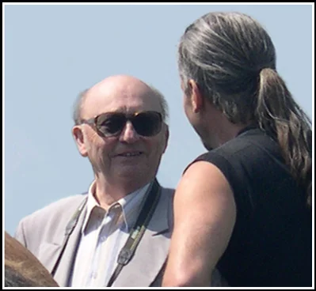

A MAGYAR MÚLT JÖVŐJE
" ... Ennek pótlására néhány évtizede a régészek egy csoportjával létrehoztuk a gyakorlati régészetet, amely azt a célt tűzte maga elé, hogy minden részletében rekonstruálja az egykori életet az adott kor szerinti feltételek között. Az elért eredmények nagyon bíztatóak voltak, mégsem hoztak eddig átütő sikert, mert a múlt feltámasztása csak egy teljes életforma választása révén valósulhat meg. Csakis olyan emberek képesek erre, akik megszállottként elkötelezik magukat arra, hogy az őseink útját kívánják járni. S minden erejüket, képességüket, anyagi javaikat e nagy és szent cél érdekének vetik alá. A múlt feltámasztásának hősei ők!Kassai Lajos, Grózer Csaba, Ruthardt Sándor, Cziráki Viktor, Eördögh András, és mások nyomdokain járva talán az egyik legeredetibb személyiség e könyv szerzője: Kelemen Zsolt.

Korábban többen hangsúlyoztuk, hogy a magyar temetkezésekből ismert fegyverzettel (íj, nyilvesszők, tegezek, szablya, kard, balta, kés) ellátott könnyű lovasok nem győzhettek volna ezekben a hadjáratokban. Feltétlenül szükségesek voltak nehéz védőfegyverzettel ellátott csapatok, ugyanúgy, amint volt a szkítáknál, hunoknál, párthusoknál, avaroknál, türköknél. Ezeket alkotják újra hitelesen. Eddigi ismereteink szerint a Kr.sz. előtti XIII. századból való az első bronz pikkely páncél (Bogaz Köy), amelyet a ragozó nyelvű hurrik "találtak" fel, feltehetően sumér örökség révén. A sémi asszírok sokkal később alkalmazták a páncélzatot. A szkítáknak, a hunoknak is saját útjuk volt.
E kötet nagyban hozzájárul ahhoz is, hogy még népszerűbb legyen az ősi magyar lovas harci kultúra, mind a Kárpát-medencében, mind szerte a világon.
A mai lovasíjászat és lovas harcművészet valódi hungarikum!
Ugyanakkor ez a könyv nemzetvédelmi imakönyv is, mivel hitelesen ellensúlyozza a hivatalos magyarországi (de nem magyar) történetírás belénk sulykolt tévtanait, amely révén szeretnének véglegesen megfosztani bennünket ősi rokonainktól: a szkítáktól, a hunoktól, az avaroktól.
Biztos vagyok abban, hogy e kötet sok hívet és még több követőt toboroz majd az ősi turulos hadizászlók alá, s a történelmi lovasjátékokban megedződött férfiak és nők oszlopai lesznek a Kárpát-medencei magyarság fizikai és szellemi védelmi rendszerének. "
Budapest, 2009. június 9.Dr. Bakay Kornél
Magyar Örökség-díjas Régész